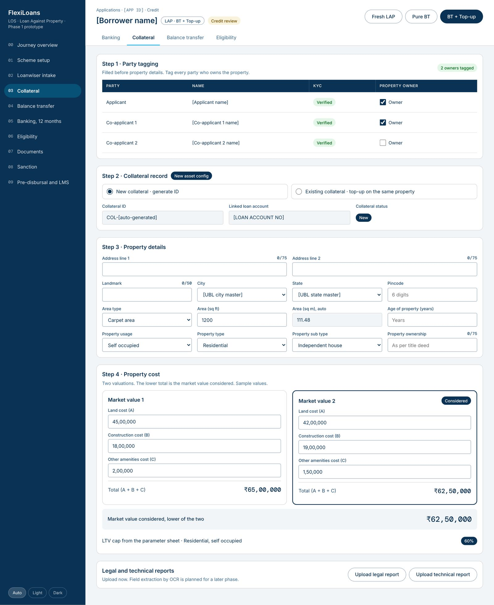
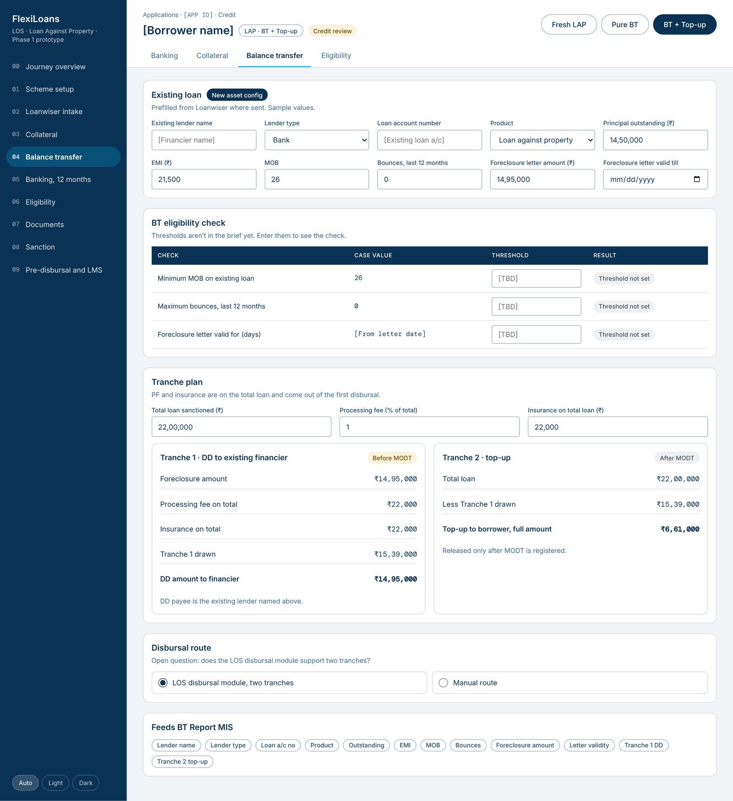
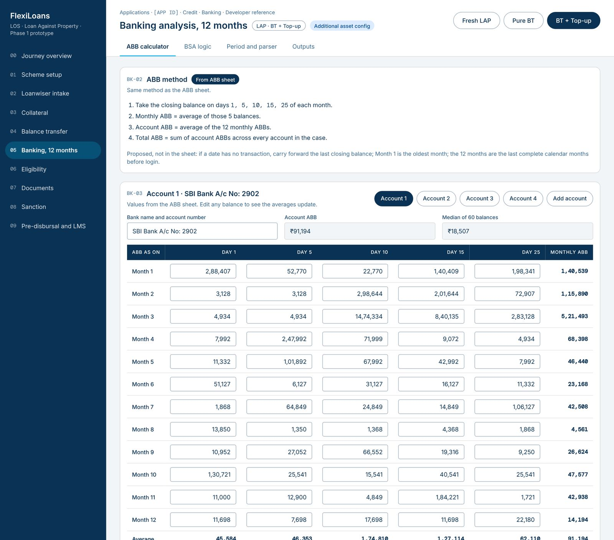
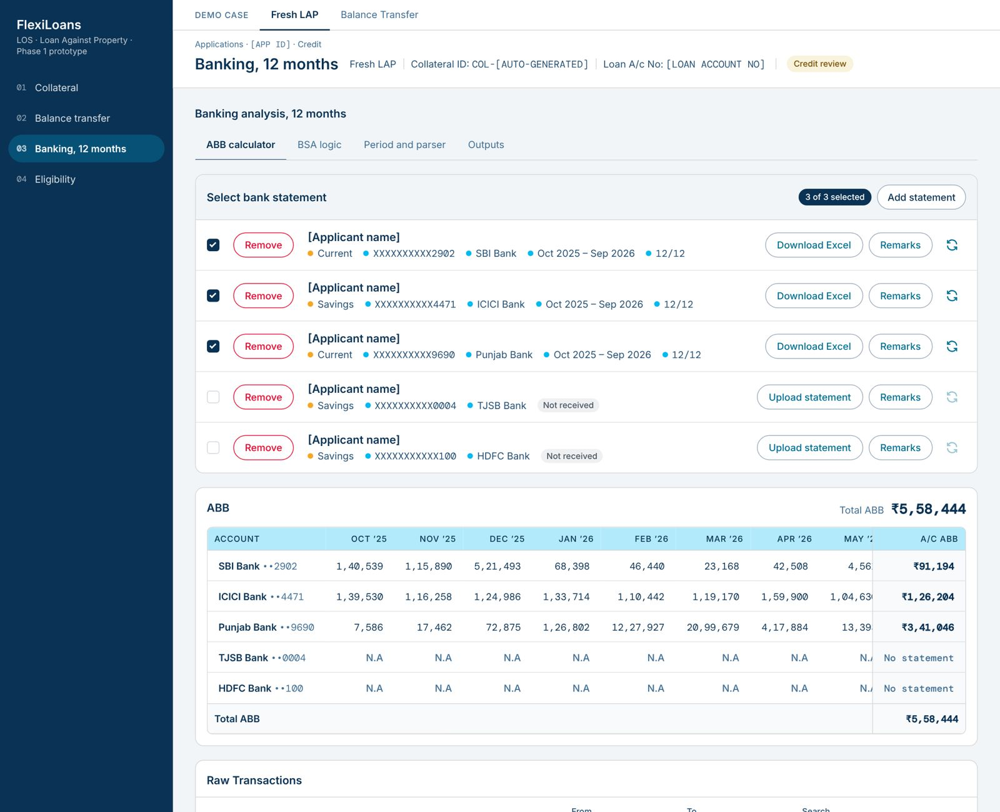
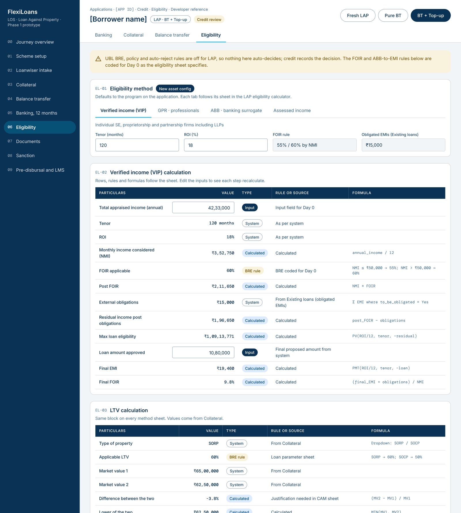
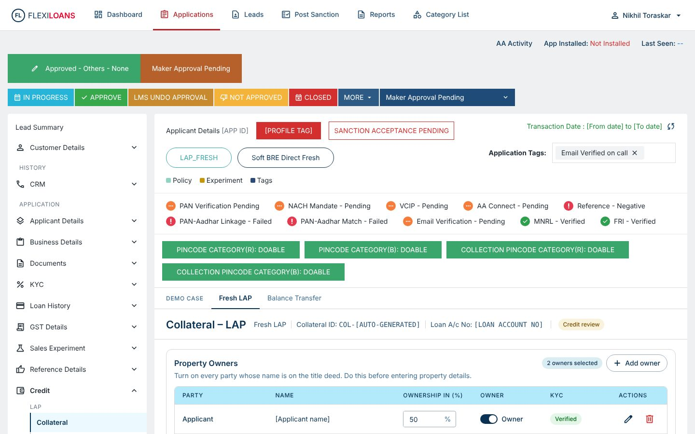
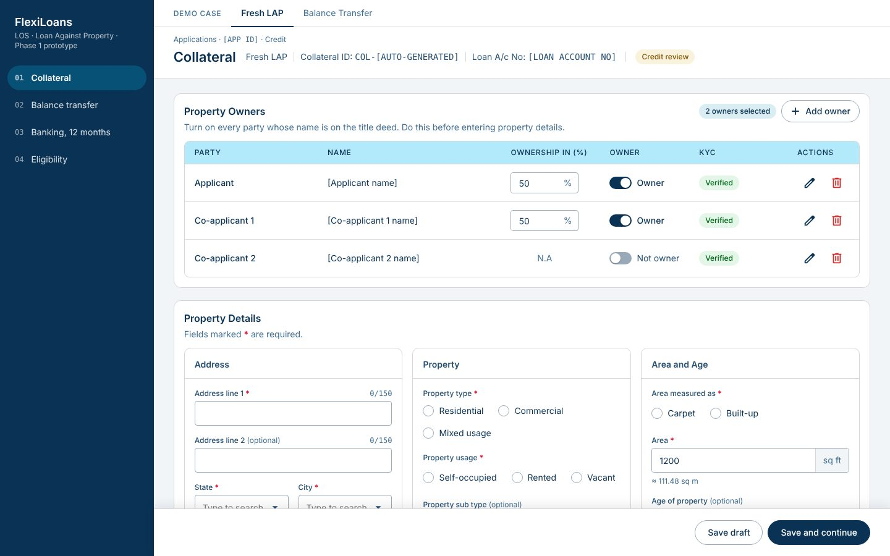

Case study · FlexiLoans · Lending
Loan Against Property, made credit‑ready.
How I turned a rules-first PM wireframe into four credit screens where every number that decides a loan is chosen on purpose, easy to check and explained on screen.
- Role
- UI/UX designer (sole designer)
- Timeline
- 5 days design · live in ~10
- Team
- 3 PMs · LAP team · design lead (reviews) · devs
- Tools
- Claude Design · FlexiLoans Design System
- Status
- Live · Phase 1
TL;DR
A PM’s wireframe got the lending rules right, but defaults and missing checks could quietly change how much money is lent.
As the sole designer, redesigned all four credit screens on our design system, in 5 days.
Live in about 10 days, used by the LAP team, with no issues reported so far.
Empathise · Users and context
A new secured loan, on four chained screens.
Loan Against Property is FlexiLoans’ first secured product. Before a case is sanctioned, the credit team checks the property, any loan being taken over, a year of banking, and finally how much the borrower can get.
A choice on the first screen changes the number on the last.
The flow, and the doubt at each step
- ACollateralWho owns it, what it’s worth → LTV“Did I pick the property type, or was it already selected?”
- BBalance transferExisting loan, foreclosure, top-up“How much top-up is this customer actually allowed?”
- CBanking, 12 monthsAverage bank balance → income limit“Do I really have to type 60 balances for this account?”
- DEligibilityLowest limit wins → final amount“Which method gives the right amount? I can only see one at a time.”
Users
Credit managers in the LAP team: experts in lending rules, new to this product, accountable for the sanctioned amount.
Research
Walkthrough with the LAP team and 3 PMs, login to sanction; mapped which inputs change the loan, and audited the wireframe against usability heuristics.
Constraints
1-week timeline, requirements changed mid-week, must fit the existing LOS, and I was new to lending.
Define · The problem
The rules were right. The experience wasn’t there yet.
A PM handed over a four-tab wireframe written as a developer reference. It got the lending rules right, but it skipped our design system and most of the UX.
The tension: credit managers need speed on every case, yet in secured lending one wrong default quietly changes how much money is lent.
What my heuristic audit found
Property type and usage came preselected. A case could be saved with a 60% LTV nobody chose.
Owners were only ticked, so ownership shares that don’t add up went unnoticed.
No validation, empty or error states. Incomplete cases could move forward.
“Total (A + B + C)” formula tables. Credit had to decode the maths.
60 month-end balances typed by hand for every bank account.
Its own colours and components, not our design system.
How might we help a credit manager enter a case so every number the loan depends on is chosen on purpose, easy to check and explained on screen?
Define · Insights → principles
What I learned, and the rule each one became.
Property type, usage and ownership change the amount sanctioned.
Radio buttons, nothing preselected. Shares must total 100%.
They need to check a number in seconds.
Value × LTV = max loan. Foreclosure as a receipt.
A mistake caught on entry never reaches sanction.
Inline validation with exact messages; Save jumps to the first fix.
LAP lives inside a LOS credit already knows.
FlexiLoans components, colours, type and states.
Plus one more: comparison builds confidence. Seeing every eligibility method side by side makes the final choice easier to defend.
Ideate · The solution
Four screens, four fixes.
BeforeOwners ticked, type and usage preselected, valuation maths as “A + B + C”.
My calls
- Ownership shares must total 100%, with an exact error
- Type, usage and area type start empty; the LTV appears where it’s decided
- Lower valuation × LTV = max loan, in one line
- Save jumps to the first field to fix
Ticking each owner → Each owner’s share, totalling 100%
BeforeForeclosure parts in separate fields, no total, no visible top-up limit.
My calls
- Foreclosure shown as a receipt that adds up to one total
- Top-up cap visible: original loan − principal outstanding
- Policy warnings as you type
Adding numbers in your head → A receipt and a visible cap
Before60 month-end balances typed by hand for every bank account.
My calls
- Upload first, Perfios second, manual entry only as a fallback
- Include or exclude each statement, with a reason
- A missing month is named and blocks the result
Typing 60 balances → Upload → Perfios → manual
BeforeMethods behind tabs, one at a time; limit maths as a formula table.
My calls
- Four method cards, each with its final eligible amount
- Lowest of income, property and scheme limits, with the one used tagged
- The finalise button names the method
Tabs, one method at a time → Cards showing every result
Prototype · Process
Five days, wireframe to clickable prototype.
- 01Understand
Wireframe and loan rules with the LAP team and PMs
- 02Audit
Four screens against heuristics and principles
- 03Design
Specs and prompts in Claude Design, on the design system
- 04Iterate
Reworked screens as requirements changed mid-week
- 05Hand off and review
Clickable prototype for developers, then a design review of their build
Me
- Loaded the design system’s guidelines into Claude Design
- Wrote the specs and prompts for every screen and state
- Made the UX calls: what to ask, in what order, when to warn
- Reviewed and corrected every screen: logic, copy, states
Claude Design
- Turned specs into working, clickable layouts
- Made fast iteration possible as requirements changed
- Produced the prototype developers worked from
Because the prototype was interactive, PMs could change a valuation and watch the max loan update. Reviews were about behaviour, not pixels.
Deliver · Before → after
The real screens, and the final product.
Pick a screen to compare the PM wireframe with my redesign. All data is sample data.





See how the final product looks
Two clickable prototypes. Open them, change a value, switch tabs, and watch the screens respond.

Inside the LOSHow it looks in the LOSThe redesigned credit screens in place, inside the loan origination system the LAP team works in.
Open the LOS view ↗
Final prototypeJust the four screensCollateral, Balance transfer, 12-month banking and Eligibility, without the rest of the LOS around them.
Open the prototype ↗All names, IDs and amounts are sample data.
Test & learn
Live in about 10 days. Here’s what comes next.
Testing, honestly
Phase 1 went from PM reviews to release; I haven’t tested it with credit managers yet. No issues have been reported by stakeholders so far.
As more cases go through, I’ll track:
- Cases corrected after sanction for a wrong type, usage or LTV
- Cases sent back for ownership mismatches
- Time spent on the banking step
- Time to finalise eligibility, and method switches
Next
Sit with credit managers on live cases, and let what they struggle with shape Phase 2.
What I’m taking forward
In lending, almost every field changes a number later on. The maths showed me where the risky choices were.
The wireframe’s logic held up. My job was the order, defaults, feedback and wording around it.
When the PMs asked for simpler layouts, I kept detail only where it explains a number.
With the design system loaded into Claude Design, my time went into decisions, not pixels.